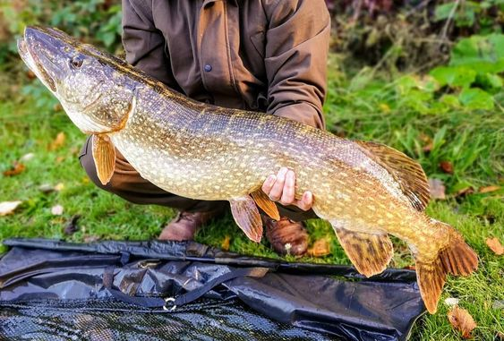
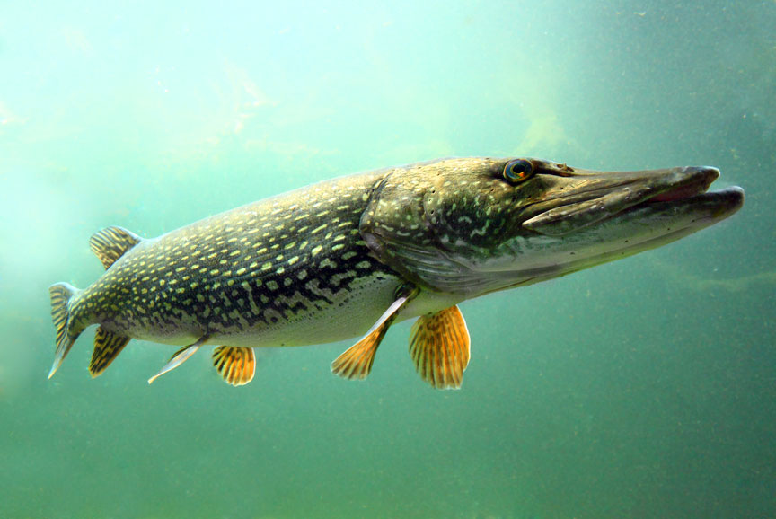

Szczupak, szczupak pospolity (Esox lucius) to drapieżna ryba słodkowodna z rodziny szczupakowatych.  Ma ciało wydłużone. Płetwa odbytowa i grzbietowa znajduje się niedaleko ogona. Grzbiet ma oliwkowy kolor, spód biały lub żółtawy. Oliwkowe boki zdobią żółte plamy. Płetwy również są ozdobione plamami. Pysk jest spłaszczony grzbietowo-brzusznie. Szczupak ma szeroki otwór gębowy z ostrymi zębami. Oczy są dość duże. Szczęka dolna jest wysunięta ku przodowi. Najczęściej łowione osobniki mają metr długości i 5 kg wagi ciała.
Występowanie i środowisko
Szczupak zasiedla rzeki, stawy, jeziora, a także przybrzeżne wody morza. Lubi ukrywać się w wodnej roślinności, najczęściej w trzcinowiskach. To ryba europejska. Nie występuje na Półwyspie Iberyjskimi w południowej części Włoch. W Polsce to ryba dość pospolita. Występuje w wodach na terenie całego kraju.
Tryb życia i zachowanie
To dość agresywna ryba, czatująca na swoje ofiary. Najczęściej poluje o świcie lub o zmierzchu.
Pożywienie
To drapieżniki, które przejawiają także kanibalizm. Polują na owady, ryby, płazy, ssaki, takie jak szczury i myszy, małe ptaki wodne. Narybek żywi się z początku planktonem, szybko zaczyna polować.
Rozmnażanie
Tarło odbywa się od końca marca do końca kwietnia, czasem do maja. Odbywa się ono podczas wiosennych roztopów przy temperaturze 3-6 °C. Bardzo często tarlisko znajduje się na zalanych łąkach i płyciznach. Samica zwykle składa od 3 do 250 tysięcy ziaren ikry. Po dwóch tygodniach z jaj wykluwają się larwy, które pewien czas spędzają w bezruchu przyklejone do roślin. Samiec osiąga dojrzałość płciową w trzecim roku, samica w czwartym roku życia.
Ciekawostki
Ryba ta jest ceniona przez wędkarzy. Ma bardzo smaczne , choć ościste mięso.
Okres ochronny: od 1 stycznia do 30 kwietnia.
Wymiar ochronny: 50 cm
Dobowy limit połowu: 2 szt. razem z boleniem, karpiem, lipieniem, amurem, pstrągiem potokowym, sandaczem, brzaną.
Rekord Polski: 24,10 kg 133 cm